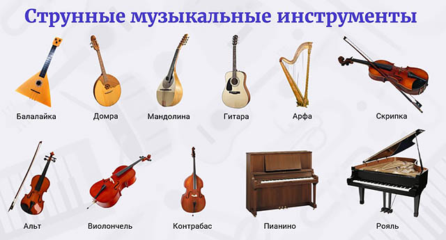
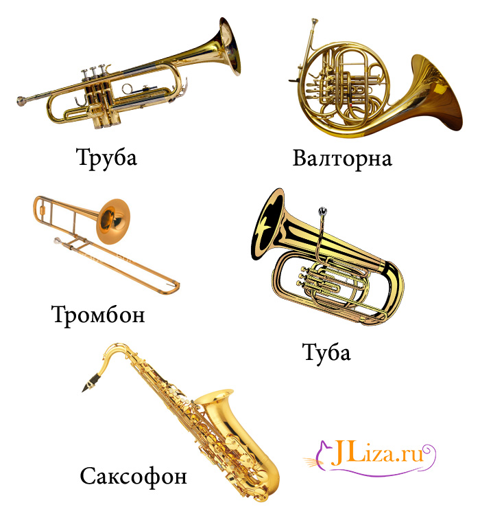
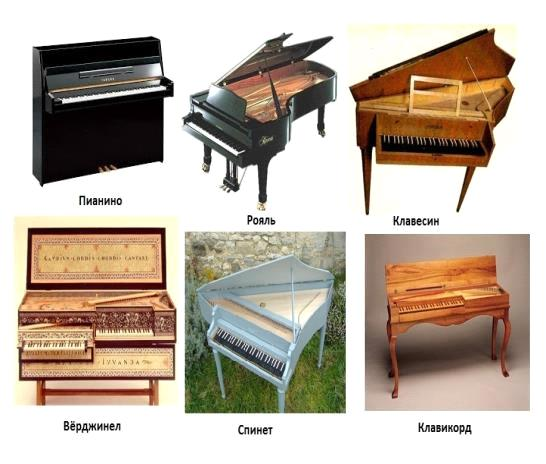

Существует много различных видов инструментов:
- Например
- Струнные
- Духовые
- Клавишные
- Ударные
- К струнным относятся: 
- Скрипка
- Виолончель
- Контрабас
- Арфа
- Гитара
- К духовым относятся: 
- Саксофон
- Труба
- Валторна
- Тромбон
- Туба
- К Клавишным относятся: 
- Клавесин
- Рояль
- ПИанино
- Синтезатор
- Вёрджинел
- Спинет
- Клавикорд
- К ударным относятся:
- Кастаньеты
- Бубен
- Тарелки
- Колокола
- Ксилофон
- Барабан
- Треугольник
- Литавра